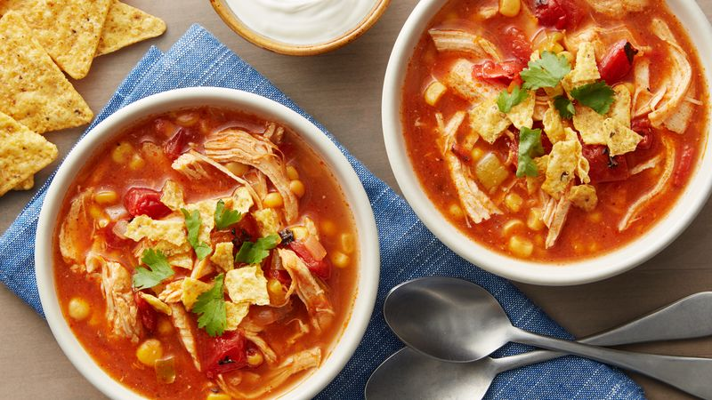

Chicken Tortilla Soup

Ingredients:
- 1 small yellow onion
- 1 green bell pepper
- 1 tbsp oil
- 3-5 garlic cloves
- 2 chicken breats
- 16 oz can of corn, drained
- 2 tbsp of taco seasoning
- 1 tsp salt
- 16 oz can diced tomatoes
- 16 oz can black beans, drained
- 4 cups of chicken broth
- Avocado, sliced (optional)
- Cheese, shredded (optional)
- Cilantro (optional)
- Lime wedges (optional)
- Tortilla chips (optional)
Directions:
For this recipe, I use the Pampered Chef Quick Cooker. It is not necessary, but the directions will be for this device.
- Dice the onion and bell pepper. Prepare the garlic and mince it.
- Heat oil in the Quick Cooker on the Sear setting.
- Once oil is hot, add the diced ingredients and cook uncovered until soft about 3-5 minutes.
- Add the garlic.
- When the garlic is fragrant, add chicken, corn, seasoning, salt, tomatoes, and black beans.
- Stir ingredients and close lid.
- On the Quick Cooker, use the Custom setting. Adjust the time to 10 minutes and press Start.
- When done, remove chicken and shred it.
- Change the Quick Cooker setting back to Sear at 10 minutes.
- Add the chicken broth and shredded chicken.
- Let soup simmer for at least 10 minutes, or until ready to eat.
- Serve with the optional toppings listed above, and enjoy!